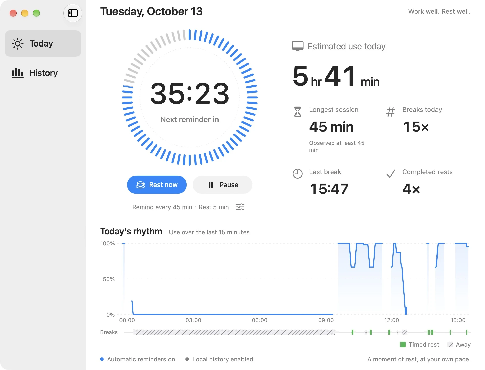
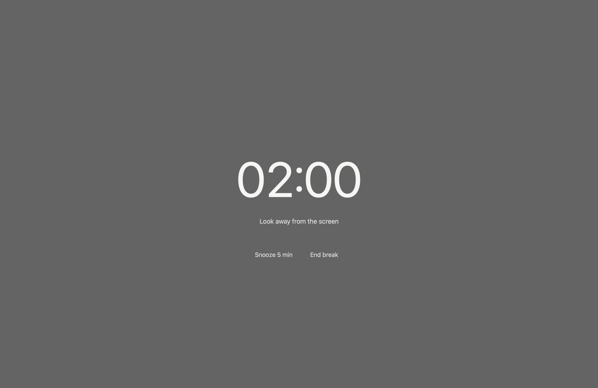

Free
0Everything for a daily rhythm
- Automatic and manual breaks
- Interval, duration, pause, and postpone
- Quiet hours and Focus filters
- Today and all monthly statistics
- Seven days of details, history export and deletion
A break reminder, made for Mac
A quiet companion in your menu bar. Choose your rhythm, make room for a pause, and let your eyes wander beyond the screen.
See Unfold in actionPreparing for the Mac App Store
Apple silicon · macOS 15 or later

The real app. Quiet reminders, a clearer view of your day. View full-size image ↗
01 / Features
Set your reminder interval and break duration. Choose a full-screen break or a notification. Pause, postpone, or finish early whenever you need.
Quiet hours and Focus filters are free. Pro also lets reminders avoid busy calendar events and selected foreground apps.
Today, monthly heatmaps, and trends are free. Daily and weekly details cover the last seven days for free. Usage estimates reflect observed periods only.

The default frosted break screen covers available displays. Pro adds your own background image and break message.
02 / Free & Pro
Everything for a daily rhythm
One purchase. No subscription.
US reference price. Your local price is shown by Apple in the app.
Apple handles purchases and restores. Monthly statistics stay free.
03 / Privacy
History is stored locally. Unfold does not upload activity data or read screen contents. There are no advertising or analytics SDKs. Turn recording off, export your history, or delete it.
Read the privacy policy ↗Find help with reminders, history, and purchases, or contact support directly.